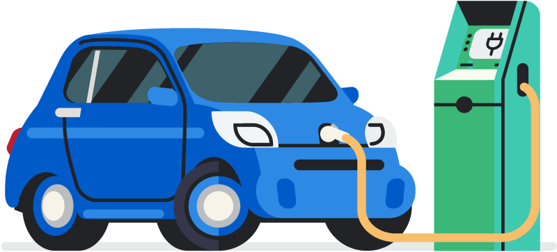
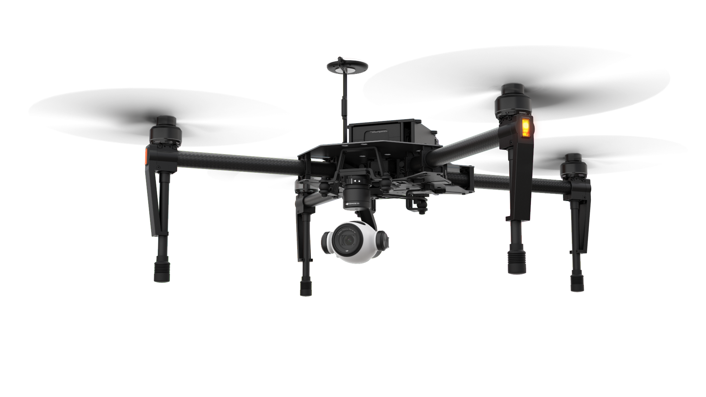

Name : R.Lubin Raj
Age : 19
College : Saveetha School of Engineering
Department : Mechanical
Languages : Tamil, English
About : I am a Mechanical Engineering student, Studying at Saveetha School of Engineering, I have completed my schooling from Loyola International School, Chettipedu. I have planned to do my specialization in the field of electric vehicles and self-driving drones. I spent plenty of time deciding what to do next it gave me lots of ideas, I know voices in my head aren't real but their ideology was great. I started to explore in various fields because knowledge isn't limited. I also spent several months in management. Being in an organizational leadership role inspired me to push myself a little more and then a few more and it keeps going.
I am fascinated by organizational culture and leadership concepts. I am also captivated by the ideas of social and emotional intelligence and the roles they play in every day as well as corporate life.
I have a goal to travel and to experience different places and people. In the meantime, I have an omnipresent urge to learn. I want to dabble in design, marketing, social media interaction, engineering, management, and programming in order to build at least a novice standing in all those areas.
I was never forced about scoring good marks by my parents which gave me lots of freedom to spread the surface area of interest, sorry for technical words, its an engineer's habit .when it comes to career am very much specific to go in the domain of electric vehicles. I could say am technically skilled in designs and modeling. Integrating my interest with my purpose and career is the best thing I have done.
I am able to create a fully functioning dynamic website, Create and test applications for websites, Present design specs, Work with graphics and other designers, Troubleshoot website problems, Maintain and update websites. I am capable of creating a fully functioning Self-driving automobile stimulation. I am able to understand, build and train Convolutional Neural Networks with Keras and to apply Computer Vision and Deep Learning techniques to build automotive-related algorithms

The combination of both hard and soft skills allows me as an engineer to perform the labor of the position and also work with coworkers to operate as a unit efficiently. A diverse range of skills such as Problem-solving, Computer science, Industry skills, Pressure management, Teamwork, Creativity, Structural analysis, Communication, Attention to detail, Educational commitment, Data modeling, Leadership. Looking forward to Develop in a career with the field of expertise in Engineering designs, Electric vehicles, and drones
